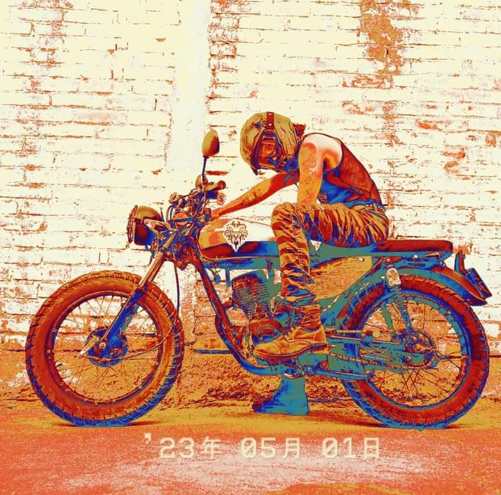

Mi nombre es Luis Romero, un joven apasionado por el arte y la tecnologia me encanta encontrar formas innovadoras de para resolver problemas y me cosidero bastante eficiente a la hora de trabajar en equipo o de forma individual. Mi area son las TI en especifico el area de Entornos Vituales y Negocios Digitales. Mi trabajo en esta area es desarrollar soluciones innovadoras y efectivas para las empresas, con el fin de mejorar su performance en la nueva era digital. 
Estudiante próximo a egresar de la Ingeniería en Entornos Virtuales y Negocios Digitales, con experiencia en diseño y creación de contenido digital, animación y gestión de proyectos tecnológicos. Destaco en el desarrollo de gráficos vectoriales, ilustración digital, modelado 3D, edición de video, diseño web y programación orientada a objetos. Mi trayectoria laboral incluye trabajos en estudios de animación y empresas de telecomunicaciones, enfocándome en la generación de contenido innovador y estratégico.
Especializado en la creación de piezas visuales que combinan creatividad y funcionalidad. Desde ilustraciones digitales y gráficos vectoriales hasta animaciones modulares y contenido para redes sociales, mis trabajos reflejan un enfoque técnico y artístico que busca conectar con las audiencias. Con experiencia en herramientas como Adobe Illustrator, Blender y DaVinci Resolve, desarrollo proyectos visualmente impactantes y adaptados a las necesidades de cada cliente